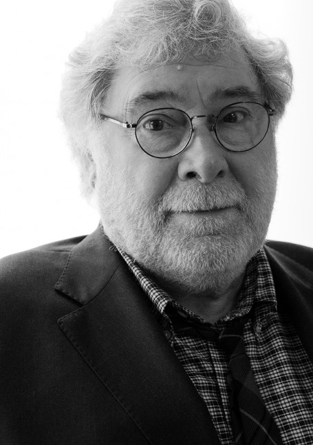

Étienne Robial, né le 20 novembre 1945 à Rouen, est un éditeur de
bande dessinée, graphiste et directeur artistique français.
Comme éditeur, il est connu pour avoir animé avec Florence Cestac de
1974 au début des années 1990 la maison d'édition Futuropolis, qui
a joué un rôle déterminant dans l'évolution de la bande dessinée
d'auteur francophone

Etienne Robial
Designer Graphique Français
"L'habillage n’est pas qu’une histoire d’esthétique et de charte graphique, mais d’identité : quand on arrive sur l’antenne, on doit savoir exactement où l’on est.